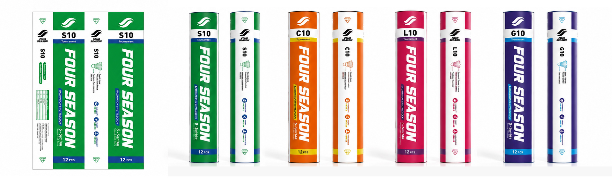
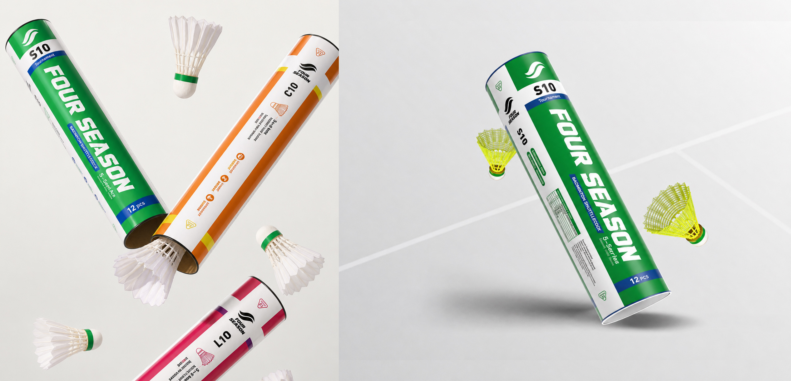

OutputResearch report, presentation & packaging system
Packaging direction developed after the research identified a nylon-shuttle opportunity
The brief
Assess where a Chinese badminton brand could credibly enter India.
The initial assignment was a market study and presentation for expansion into India. Rather than treating the category as one homogeneous opportunity, the research examined participation, price bands, buying channels, training economics and the difference between feather, nylon and higher-performance synthetic shuttles.
Market reality
A structured niche—growing steadily, but not at mass-market scale.
Badminton has established associations, academies and urban training communities in India, yet it is not the country’s mainstream sport. Demand is rising, but not sharply enough to justify a broad, premium-led rollout. Buyer quality also varies, making channel choice and payment reliability part of the market-entry decision.
~6%Reported equipment-market CAGR to 2030
4Priority nylon-shuttle use cases
B2BBest early route through qualified buyers
1Focused product opportunity
Research conclusion: treat growth as selective and evidence-led, not explosive.
Key finding
The clearest opportunity was nylon, not premium feather.
The brand’s feather shuttles were priced above the needs of much of the addressable market. Schools, beginners, outdoor players and cost-sensitive training environments valued a different proposition: a shuttle that lasts longer, survives repeated play and keeps the cost per session low.
01
Durability
Withstand repeated play and reduce replacement frequency.
02
Affordable usage
Keep the cost of school, community and training sessions predictable.
03
Reliable supply
Support institutional and distributor purchasing with consistent availability.
04
Fast identification
Make model, speed and use case clear at a glance.
Design response
Research became a new packaging requirement.
After reviewing the findings, the client expanded the brief to include nylon-shuttle packaging. The system uses high-visibility colour coding, large model names and a direct performance hierarchy so distributors, retailers and institutional buyers can distinguish products quickly.

Unified visual identity with clear model and speed differentiation

Product visualisation across feather and nylon applications
Market validation
The trade show confirmed the direction.
After returning from an Indian trade show, the client reported that buyer interest in nylon shuttles was stronger than interest in its higher-priced feather range. The feedback validated the central research insight: durability and usable value mattered more than premium specification for the most accessible part of the market.
The winning proposition was not “more premium.” It was “more play from every shuttle.”
Strategic guardrail
Validate the segment without overstating the market.
Positive demand did not remove the commercial constraints. Badminton remains a secondary sport in India, growth is incremental, and customer quality is uneven. The recommended next step is a controlled entry: prioritise credible distributors and institutional buyers, test repeat orders, protect payment terms and scale only where sell-through proves consistent.
01
Target nylon use cases
02
Qualify buyers
03
Pilot supply
04
Scale on repeat demand
Research output
A decision tool, not a market-size presentation.
The final report and presentation connected category evidence to a concrete product and design decision. The work helped the client move from a broad ambition—sell more feather shuttles in India—to a sharper proposition built around nylon durability, channel discipline and realistic demand.